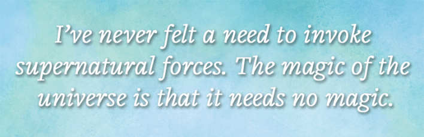
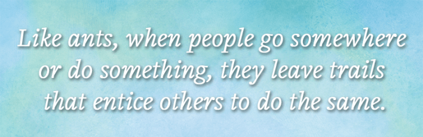
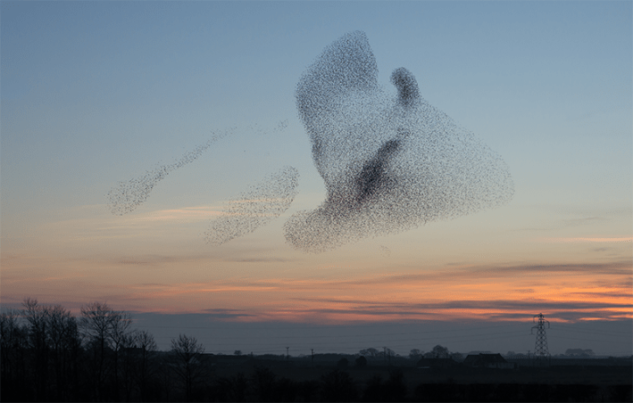

After college, I went backpacking through Africa, and at the Khartoum airport in Sudan I met an American guy named Chris. We explored together for a few days and went our separate ways. A month or two later, I stopped by the main post office in Nairobi, and there he was again: Chris. We chatted and parted. A few months on, I was playing soccer with some boys in a village in Malawi, and who should show up but Chris. A few weeks after that, I was trying to hitchhike and having no luck, when a car finally stopped. I need hardly say who was in it.
A year later, on a separate trip, I was passing through Hawaii and met a Japanese guy at my youth hostel. We went in search of ice cream and realized we had traveled through Africa at the same time. Here, finally, was a way to assess the odds of my repeat Chris encounters. Backpackers do tend to follow a few well-worn paths, so maybe it wasn’t all that unlikely. But my new friend and I had never met in Africa, nor did he know Chris, nor had he repeatedly crossed paths with anyone else. So, my experience with Chris really did seem uncanny. At that moment, someone called my name, and on a street corner in Honolulu, I turned to see Chris.
I am a firm believer in materialism. For all my wonderment at nature—the thrill of seeing Jupiter in the night sky or hearing frogs cackling in a swamp—I have never felt a need to invoke supernatural forces or beings. To me, the magic of the universe is that it needs no magic. A few simple rules and a few basic ingredients beget a sublime diversity. But I try not to be dogmatic about it, and episodes such as my serendipitous encounters with Chris remind me that it is not irrational to wonder whether there is more to this world than atoms and void.
A 2021 episode of This American Life compiled some jaw-dropping coincidences. A guy named Blake wanted to change his phone wallpaper and mentioned it to a friend, Camille. He asked her to send a photo of something, and as a joke she sent one of herself as a kid. Behind her was a street scene, including a woman passing by. Blake looked more closely. It was his grandmother! Heightening the unlikelihood, the photo wasn’t taken in Blake’s or Camille’s hometowns. It was taken in British Columbia, where both families happened to be vacationing at the same time. It was coincidence upon coincidence.

“When coincidences pile up in this way one cannot help being impressed,” Carl Jung wrote in his essay “On Synchronicity,” from 1951. Like many ’80s kids, I first learned of the term from the Police album Synchronicity, on which Sting sang of “a connecting principle / linked to the invisible.” Jung famously recalled a psychotherapy session in which a woman was recounting to him a dream of scarab jewelry, when they heard a rapping on the window—it was a scarab beetle. Nothing caused this coincidence, he accepted, but the events could be connected through some other means—some structuring of nature that is not captured by the laws of physics. We may be participants in a larger pattern. In support, he also cited experiments on ESP, which many scientists at the time still took seriously.
Skeptics are less impressed. They point out that there are so many people on this planet, doing so many things, that the rare becomes routine. A one-in-a-billion event may happen several times a day. In 1989, statisticians Persi Diaconis and Frederick Mosteller codified this wisdom as the “law of truly large numbers.” With a large enough number of opportunities for an event to occur, even extremely unlikely events become probable. Although the odds of winning a national lottery can be 1 in 100 million, it’s probable somebody will win, simply because a truly large number of people buy tickets.
Flukes turn out to be even more common when we consider that people tend to count a near-miss as a direct hit. People also conveniently forget all the times there could have been a coincidence but there wasn’t. Jung’s anecdote is less impressive when you consider that insects were probably banging up against his window all the time, and he noticed them only when he was primed to do so.
For some skeptics, all the talk about coincidence is just another example of human irrationality. Why can’t people grasp probability theory, already?
But others are more sympathetic. Our brains evolved to be on the lookout for patterns and, from them, make split decisions to discern how the world works. Only by grasping cause-effect relationships can the brain decide how to act to achieve its goals. But the brain has no independent way to tell a significant occurrence from a random blip. It has to make a judgment call. It can’t entirely avoid the risk of reading too much into randomness without missing out on genuine features of the world. If you plug your ears to noise, you’ll never hear music, either.
Psychologists Mark Johansen and Magda Osman, as well as Thomas Griffiths and Joshua Tenenbaum, have argued that our fascination with coincidences indicates that the system is striking an appropriate balance. Deviations from the usual course of events rightly catch our attention. They feel spooky when a conventional explanation falls short and nothing plausible takes its place. That leaves us hanging in a state of unrequited curiosity.
Osman told me a story of when a colleague she hadn’t heard from in years came into her mind, and that person emailed her the next day. Forced to choose between two unlikely explanations, pure chance and some kind of ESP, she reluctantly opts for chance. “I don’t treat it as sufficient evidence to reorientate my entire belief system around accepting psychic phenomena as real,” she said.
I feel the force of arguments that coincidences are probabilistic happenstance—but don’t feel entirely assuaged. A one-in-a-billion event may happen to someone somewhere several times a day, but it’s still unlikely that it will happen to you. That’s why your mother warned you not to play the lottery. So, when an event like that does happen to you, it’s rational to look for a reason besides pure chance. A coin that lands on heads 30 times in a row is surely a trick coin.
YOU AGAIN? At left, author George Musser (white hat) catches a ride in the bed of a pickup truck (matatu) in southwestern Uganda in mid 1989. At right, Chris (pink shirt) on a street in Addis Ababa. The two strangers met again and again, by coincidence, during their African travel.
The skeptical position gets hand-wavy when it comes to estimating personal probabilities. How do you even begin to assess the odds of my encounters with Chris or Blake spotting his grandmother in a friend’s old photo?
The best attempt I’ve seen is by a non-skeptic, Sharon Rawlette, a philosopher who is sympathetic to paranormal explanations. In her book The Source and Significance of Coincidences, she gamely took a stab at estimating the probability of her own Jung-like episode with a scarab: low but not insanely so. She also noted that skeptics take it for granted that an incredible event happens in the population at the predicted frequency. Do we really know that? It would be nice to collect statistics on coincidence reports. If we found that those one-in-a-billion events happen several hundred times a day, we might have evidence for a genuine phenomenon.
But to question the skeptical arguments is not to accept ESP. We don’t need to swing between the extremes of spurious correlation or supernatural occurrence, because there is a third option. Some coincidences might be caused, or at least their odds shortened, by actual hidden structures in the world.
Read more: “Why We Keep Playing the Lottery”
After all, Jung was right in one sense. We are participants in a larger pattern: human culture. If human beings tend to over-ascribe causality, we also tend to overstate our individual autonomy and originality. Skeptics call the former cognitive bias but fall prey to the latter; their probability estimates assume the statistical independence of events that may well be related. In fact, almost everything we think or do is a remix. We are starlings in a “human murmuration,” as social psychologists Kevin Durrheim and Michael Quayle put it in a paper last year. I asked them whether social dynamics might plausibly give rise to coincidences, such as meeting a friend serendipitously on vacation, at a rate greater than chance, and they said they might. “The events you describe are not entirely statistical flukes,” Durrheim told me.
When Diaconis and Mosteller presented the law of truly large numbers 37 years ago, they acknowledged the general possibility of hidden causes but didn’t explore it. They had no way to measure them. Now we have vast data sets on social behavior and powerful new tools to analyze them, not the least of which is large language models.
When my wife and I named our daughter, we thought we were being original. Now I keep running into women of her generation with her name—it’s kind of disconcerting. How did that happen? We didn’t choose from a baby-name book or follow a celebrity’s example; we just liked the name. On a grander scale, almost every major scientific discovery and technological invention in history has been made by multiple people working on their own at nearly the same time. And as George Harrison or Ed Sheeran will tell you, pop music is filled with similar-sounding songs that artists swear they created independently.
The causation in these cases isn’t clear. We are reduced to saying that an idea is in the air. But most people don’t read too much into them—the best online compilation of coincidences, the Cambridge Coincidences Collection, doesn’t bother to include them—because they recognize there is a reason behind these coincidences even if they don’t know what it is. We all draw from the same well of cultural influences: the same names, the same scientific tools, the same chord patterns. In fact, simultaneous invention seems almost inevitable. These cases offer proof for a culture-based explanation of coincidences in general.

Theory suggests some ways this might work. Many sociologists and social psychologists think that ideas spread like a contagious disease. At its simplest, the spread is direct: An ad or influencer tells you to buy something, and you do. More sophisticated versions tangle up the causation, so that an idea propagates too subtly to be noticed at first; by the time it is noticed, it is already widespread. Unable to see the early stages of propagation, we think the idea has popped up in multiple places spontaneously, in what looks like sheer coincidence.
In his 2018 book, How Behavior Spreads, Damon Centola outlined the theory of “complex contagion.” He argued that people seldom adopt an innovation as soon as they hear about it. They need corroboration. Multiple influences must come together to get you to do something or hold onto an idea. You may not even be aware of all these influences; by the time you finally respond, you may feel like you’re acting on your own initiative. Other people are subject to the same diffuse influences and react in the same way. It looks coincidental, but a common cause is responsible.
Other social phenomena can also conceal causation. Nicholas Christakis and James Fowler, in their 2009 book Connected, described indirect social influences. People we have never met can alter our behavior in ways that we don’t realize at the time. Some people can be attitudinal Typhoid Marys, transmitting a belief or behavior without subscribing to it themselves. “A person might be affected and not even know it,” Christakis told me. For instance, if some of your friends become anti-vaxxers, you might personally resist—you dutifully continue to get your shots—but their attitudes nonetheless affect you, causing you to give up on arguing with them and let their misinformation spread unchecked.
In a further elaboration on the contagion model, Amir Goldberg and Sarah Stein conjectured in a 2018 paper that what spreads is not an idea, but the set of associations that form the underlying psychology of the idea. Anti-vaxxers may associate eschewing vaccines with a more natural lifestyle or rebellion against an unfeeling medical establishment. As those general sentiments spread, so might anti-vax beliefs. This, rather than the explicit transmission of misinformation about vaccines, can be the decisive factor leading people to engage in similar behavior. Because the behavior isn’t directly copied, it looks coincidental.
Read more: “The Deceptions of Luck”
Durrheim and Quayle suggested another indirect channel of influence, which social scientists have begun to explore only recently: “stigmergy.” Like ants laying down pheromones, when people go somewhere or do something, they leave trails that entice others to do the same. For example, when tourists visit a location, the locals set up restaurants and hotels, which make it easier for other tourists to follow. Online, the “also bought” listings on Amazon and stream counts on Spotify create self-reinforcing loops of popularity. Stigmergy carves cultural grooves that we slot into, sometimes unaware. This may help to explain my repeat encounters with Chris: We were both responding to choices imprinted on the world by previous travelers.
Network scientists have developed methods to reverse the direction of propagation and trace a contagion back to its original source—for instance, when looking for patient zero in an epidemic or assigning blame for misinformation campaigns. Through these techniques, we might hope to trace the elements of a coincidence back to their common cause. But such a retroactive analysis is fundamentally hard to do, as I soon found when I began to conduct a few experiments of my own.
While recovering from a wrist injury last year, I couldn’t play guitar, so I took up the harmonica. One evening I decided, apropos of nothing, to teach myself the melody of “Mr. Tambourine Man.” It was trickier than I thought. I tried to use notes from the guitar chords, but they didn’t fit, and I ended up having to refer to the sheet music for the melody.
The next morning at 11 a.m., I took a break from work to peruse Bluesky, and the first thing I saw was a post from 10:50 a.m. about “Mr. Tambourine Man.” In it, Ethan Hein, who teaches music at New York University and the New School, explained that Bob Dylan intentionally misaligned the harmony and melody. For instance, he sang the word “Man” on A while playing a C chord on the guitar.
I was gratified that my difficulty with the song wasn’t a personal failing; I had stumbled onto what music theorists call “melodic-harmonic divorce.” Dylan picked up the style from the blues and, in turn, inspired subsequent pop songwriters. But what a spooky coincidence. It didn’t seem like a simple twist of fate.
One thing I could rule out immediately is online tracking. The Bluesky feed is purely chronological, without any algorithmic curation, so the post had nothing to do with my Google search the night before. Had I been on Facebook, which is much more stalker-y, I would no doubt have been served ads for tambourines.
To look for a common cause that led both Hein and me to be interested in the Dylan song at the same time, I turned to large language models. They are pattern-detectors par excellence and make connections between realms that seem totally unrelated. They presumably identify diffuse cultural influences that humans might not be consciously aware of.
“We think using LLMs to study culture and cultural dynamics is the next big thing—a Large Hadron Collider for social and cultural research,” Russell Neuman, a professor of media technology at New York University, told me.
But as a tool for forensic coincidence-ology, I quickly discovered, they have a long way to go. The trouble is extracting relevant information from them. When I simple-mindedly asked ChatGPT-5.5 why the Dylan coincidence occurred, it responded with a generic explanation of the probability of coincidences—basically regurgitating the skeptical arguments of Diaconis and Mosteller. I couldn’t come up with a prompt that would bring out hard-to-see correlations between two people online.

FLOCK TOGETHER: Social psychologists call us starlings in a “human murmuration.” Individual activity within an evolving and interactive social system, they told author George Musser, can give rise to coincidences. Credit: Lensman300 / Adobe Stock.
One reason may be that these models extract general patterns and discard the details. (That’s also why they hallucinate. If you ask them to reconstruct specifics from generalities, what else can they do but take a guess?) As a simple test, I gave ChatGPT-5.5 a database of Bluesky posts by Hein and me in which I had planted fake messages: a prior exchange about melodic-harmonic divorce. The model failed to flag this exchange as a possible common cause for the coincidence; it still attributed the episode to random chance.
But the model may still encode subtle cultural patterns in some form. Maybe you can get at them if you directly access its innards. In a fascinating study in 2024, a team at Anthropic looked inside Claude to see how data was organized within it. Although the goal was to figure out how the model works, the result was also a cultural analysis.
During training, the model had discerned millions of conceptual categories, ranging from tangible (“Golden Gate Bridge”) to abstract (“internal conflict”). When you enter text into the model, it parses it in terms of these categories. Asked “What is it like to be you?” the model placed itself in the category of “immaterial or non-physical spiritual beings.” That doesn’t mean the model had any self-awareness; the response was based not on introspection, but on cultural associations with the question. Perhaps a future study can look for categories that link seemingly independent occurrences.
Read more: “Chasing Coincidences”
Stymied by my experiments with ChatGPT, I mentioned the problem to some data-science friends, and they suggested analyzing social-media data using Communalytic, a website that can download and parse Bluesky, Reddit, and Telegram posts. I pulled up all mentions of “Mr. Tambourine Man” on Bluesky in 2025. They were highly clustered in time and cited specific triggers. Dylan’s manuscript lyrics were sold at auction in January, he performed the song for the first time in 15 years in May, and the Byrds’ cover version was released 60 years ago in June. Very few mentions suggested a spontaneous random musing about the song. I searched for people commenting on earworms in general, and about three-quarters identified a specific trigger. So, this does indicate that most coincidental posts about a song can be traced to some common cause.
I emailed Hein and he said he’d been inspired to comment on the Dylan song by an episode of Andrew Hickey’s 500 Songs podcast in 2021. That explains his interest, though not the coincidence in timing. Looking at his and my posting history, although he and I have followed each other from the early days of Bluesky in mid-2023, we had never responded to each other’s posts before. In fact, given the number of people I follow and my Bluesky viewing habits, it’s quite likely I had never seen a post of his until the coincidental one. But we have similar politics (which is already evident from being active on Bluesky) and inhabit much the same intellectual milieu. Whenever I did finally see a post of his, it’s likely it would have meshed with an interest of mine—if not the Dylan song, then something else. That’s probably enough to explain the coincidence.
So where does that leave me? I opt for nuance. I know that’s not what the Internet wants, but by God, I don’t care. “He refused to do a hot take”—write it on my tombstone.
Some coincidences strike me as so astronomically unlikely that they demand a causal explanation. Maybe, on inspection, they will prove to be random chance. But we need this inspection. We could set a threshold for further investigation, just as scientists in every discipline flag effects of a certain statistical significance (although they debate where to draw the line). Those that pass would become candidates for sociological analysis.
Coincidences are catnip to the curious mind, which is reason enough to study them. But they could serve a broader theoretical goal, too. Scientists and philosophers use the word “emergence” to describe how individuals, working together, give rise to collective behavior: molecules in a gas, neurons in the brain, consumers in the economy. In most cases, though, they haven’t worked through precisely how it works, and the word “emergence” is just papering over ignorance. Social scientists call this woolliness the “micro-macro problem.” Computational models and data science should help to make the relation between these two levels of description less opaque. Coordinated behavior is the hallmark of emergence, so coincidences are, if anything, to be expected.
We may well find that Jung was on to something. Shaikat Hossain, who studies audio perception and has a side interest in Jung, suggested in 2012 that the Internet is a kind of Jungian collective unconscious. That has no mystical intimations. It just reflects the emergent workings of human society—a subterranean level of cultural influences that operate beneath our direct awareness and play a part in shaping our fate. As Jung stressed, a coincidence can serve a psychological purpose, whether or not we apprehend a cause for it.
All this thinking about coincidences made me think about Chris. I wondered where he was and what he was doing today. All I had for him was a 30-year-old address. It was enough. I found his phone number, left a message, and he called me back. In this age of junk-call screening, that was miraculous in itself. We immediately started bantering as though no time had passed. We soon realized that our coincidence streak had run out. Apart from each having one child, of the same age, our lives had diverged.
But I surmised that our encounters had left even more of an impression on him as they had on me. He evocatively described how, the night after our meeting in Nairobi, he felt God call him to be a doctor. Not long after our meeting in Hawaii, he entered medical school. In giving up his travels, he probably gave up the chance of further coincidental meetings in unexpected places. But the coincidences had already served their purpose. 
Lead image by Tasnuva Elahi; with images by bas121 and Drobot Dean / Adobe Stock
Källförteckning
- Originalartikel: https://nautil.us/coincidences-in-my-life-have-me-wondering-1282226/